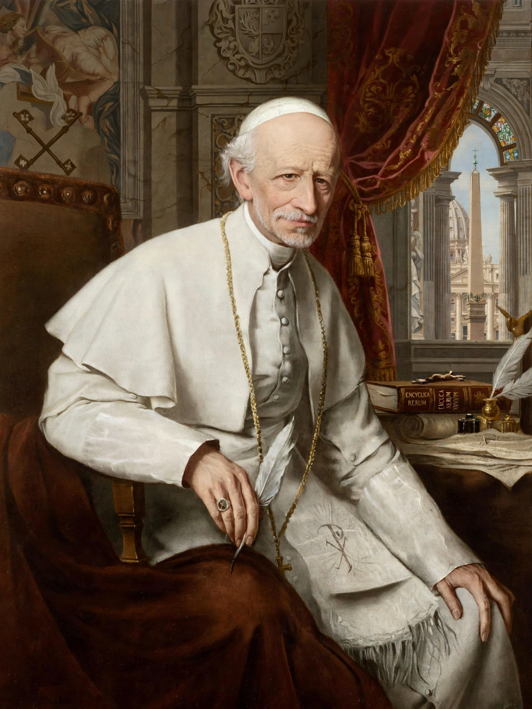

Arcanum divinae sapientiae ("The Hidden Plan of Divine Wisdom") is an encyclical of Pope Leo XIII, promulgated on 10 February 1880. It addresses the Christian understanding of marriage, reaffirming marriage as a sacrament instituted by God and condemning the growing trend — in the wake of revolutionary and liberal legislation — of treating marriage as a merely civil contract.

| Arcanum divinae sapientiae | |
| Author | Pope Leo XIII |
|---|---|
| Date | 10 February 1880 |
| Type | Encyclical |
| Subject | Christian marriage; opposition to civil-only marriage and divorce |
Leo XIII traces the history of marriage from creation, through its corruption by polygamy and divorce, to its restoration and elevation by Christ to sacramental dignity. The encyclical teaches that for Christians the marriage contract and the sacrament are inseparable, so civil authority cannot legitimately redefine or dissolve the bond. It condemns divorce laws and warns of consequences for the family and society if marriage is treated as dissoluble. It also instructs bishops and pastors to defend sound doctrine on marriage and to prepare couples for it.
Arcanum is considered the first encyclical devoted entirely to marriage and became a foundational reference for later papal teaching, including Pius XI's Casti connubii (1930). Its arguments continue to be cited in discussions of canon law and civil marriage legislation.